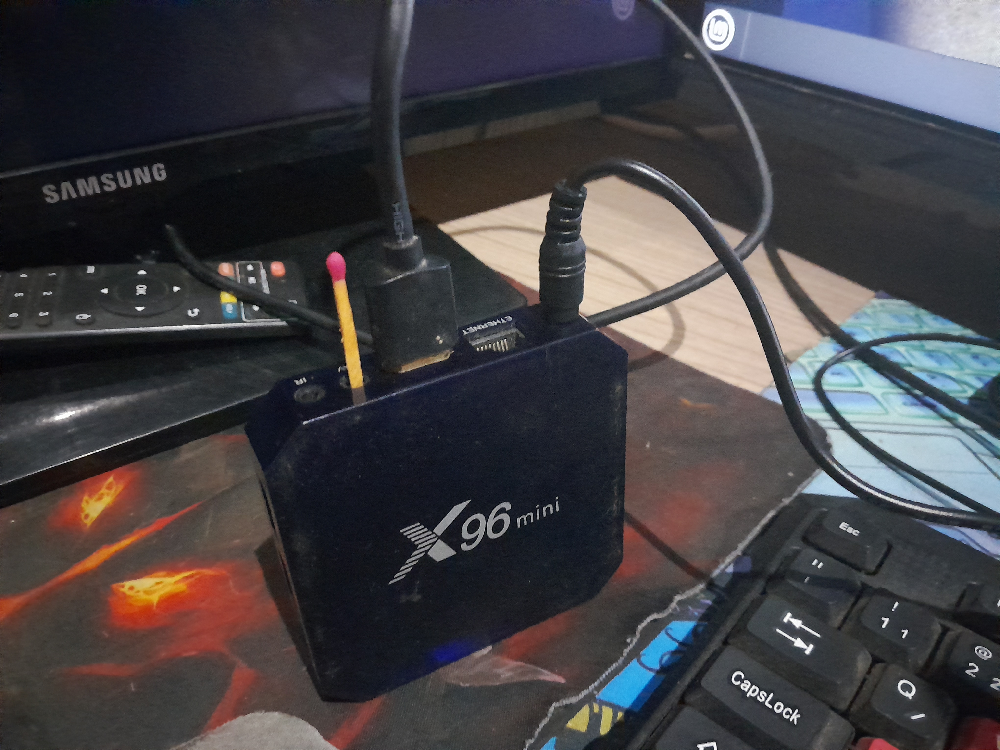

Convertendo sua TV Box em um Mini PC Ideal para Estudo
Gravando ISO no microSD de 8GB

Utilizaremos a ferramenta BalenaEtcher para transferência de uma imagem de disco (como uma ISO) para um dispositivo de armazenamento, como um cartão microSD. Esse processo é fundamental para preparar o microSD, que será utilizado na TV Box 96 mini para instalar o sistema Armbian. O BalenaEtcher é um software fácil de usar e altamente recomendado, pois garante que a imagem seja gravada corretamente, minimizando os riscos de falhas durante a instalação do sistema operacional. A interface do BalenaEtcher é bastante intuitiva. Primeiro, você seleciona a imagem que deseja gravar, em seguida, escolhe o dispositivo de armazenamento e, por fim, inicia o processo de gravação. É importante assegurar-se de que o microSD esteja corretamente inserido na box tv e que você tenha feito backup de dados importantes, pois o processo de gravação apagará todos os dados existentes no cartão.
Ajustes na Pasta Boot para TV Box Amlogic


Antes de iniciar o sistema em uma TV Box com placa Amlogic, é fundamental realizar algumas alterações nos arquivos da pasta boot do cartão SD. Após gravar a imagem do Armbian no cartão, você deve acessar a partição de boot e editar o arquivo armbianEnv.txt. Nele, adicione linhas específicas que configuram parâmetros essenciais para o funcionamento adequado do sistema. É importante definir o arquivo DTB correto correspondente ao modelo da sua TV Box, como fdtfile=amlogic/meson-g12a-sei510.dtb, garantindo que o sistema reconheça corretamente o hardware durante a inicialização.

Inicialização da TV Box 96mini com Armbian
A TV Box 96mini pode ser inicializada utilizando o sistema operacional Armbian, que é leve e otimizado para dispositivos de baixo consumo. Para começar, insira o cartão microSD preparado com a imagem do Armbian na TV Box. Em seguida, conecte a TV Box à fonte de energia e aguarde a inicialização, que pode levar alguns minutos, dependendo da velocidade do microSD e da versão do Armbian. Durante esse processo, você verá o logotipo do fabricante seguido por mensagens de carregamento do sistema. É crucial não desligar o dispositivo nesse momento, pois isso pode danificar a instalação. Assim que a inicialização for concluída, você será apresentado à interface do Armbian, onde poderá configurar sua rede e outras preferências do sistema conforme necessário. Para uma melhor experiência, considere conectar um teclado e mouse USB, pois isso facilitará a navegação e configuração do sistema. Seguindo esses passos, você poderá utilizar sua TV Box 96mini com o Armbian de forma eficiente e prática.

Configuração de Senha e Editor no Armbian

Após a inicialização do Armbian na sua TV Box Amlogic, a próxima etapa é configurar uma senha para o usuário root e escolher um editor de texto para o terminal. Ao acessar a interface do sistema pela primeira vez, você será solicitado a definir uma senha para o usuário root. É recomendável escolher uma senha forte e segura, que combine letras, números e caracteres especiais, garantindo a proteção do seu dispositivo. Em seguida, você terá a opção de selecionar um editor de texto para usar no terminal. O Armbian oferece várias opções populares, como nano e vim . Se você é iniciante, o nano é uma escolha excelente devido à sua simplicidade e facilidade de uso. Para selecionar seu editor preferido, basta seguir as instruções na tela. Após definir a senha e escolher o editor, você estará pronto para explorar e personalizar ainda mais seu sistema Armbian na TV Box 96mini.
Primeiros Passos Após a Instalação do Armbian

A instalação do Armbian foi concluída com sucesso! Na tela inicial, você encontrará vários aplicativos pré-instalados, incluindo o LibreOffice, uma útil suíte de produtividade. A interface leve facilita a navegação e o uso do sistema. Embora o Armbian já venha com diversas ferramentas, se você precisar do Geany, um ambiente de desenvolvimento integrado, será necessário baixá-lo manualmente pelo terminal. Lembre-se de que a placa não suporta Wi-Fi, então uma conexão de internet cabeada é essencial para realizar esse download.
Teste de Código Python e Registro de Capital
simulação de um código em Python testando e registrando alguns dados em uma planilha, demonstrando o funcionamento do gerenciador financeiro. A apresentação do código e o processo de registro são apresentados de forma clara, facilitando a compreensão do uso prático da ferramenta.
Apresentação do Sistema Armbian com IDE Geany
Neste vídeo, apresentamos o sistema Armbian em funcionamento. Você poderá ver alguns aplicativos instalados, além de uma demonstração da IDE Geany, que é um ambiente de desenvolvimento integrado para programação. O vídeo mostra a interface do sistema, destacando sua usabilidade e eficiência.